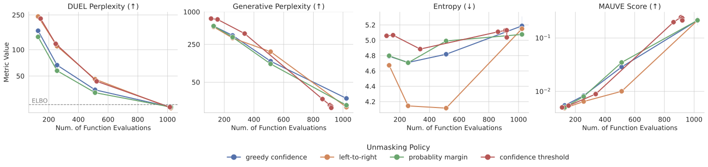

Masked diffusion models (MDMs) generate text by iteratively unmasking tokens. Each step decomposes into position selection (which positions to reveal) and token prediction (which tokens to place). We formalize deterministic position selection—unifying leading MDM sampling strategies—in our DUEL framework. We show DUEL admits exact likelihood computation via a simple algorithm. We propose DUEL likelihood as the standard evaluation metric for MDMs, addressing key limitations in existing approaches: the ELBO is a loose bound measuring likelihood under the wrong distribution, while generative perplexity requires a biased external model. Proper evaluation via DUEL reveals MDMs are substantially better than previously thought—the MDM–autoregressive perplexity gap shrinks by up to 32% on in-domain data and 82% on zero-shot benchmarks. DUEL also enables principled sampler comparisons, providing reliable rankings of fast, parallel samplers and revealing through oracle search that optimal orderings allow MDMs to surpass autoregressive models entirely.
How MDMs Generate Text
Masked diffusion models (MDMs) generate text by starting with a fully masked sequence and iteratively revealing tokens [Sahoo et al., 2024]. At each step, two things happen:
Position selection: A policy $\pi$ outputs a distribution over masked positions; one is chosen to reveal.
Token prediction: A denoising network $x_\theta$ outputs logits; we define the denoising distribution $p_\theta(v \mid \mathbf{z}) = P_\ell[v]$ where $\mathbf{P} = \mathrm{softmax}(x_\theta(\mathbf{z}))$ is the token probability matrix. A token is sampled from this distribution for the selected position.
This repeats until all positions are revealed. The figure below shows one step:
Figure: One step of MDM generation. Position selection chooses among masked positions (here, equal probability for positions 2 and 4). Token prediction samples a token from the vocabulary distribution at the selected position.
Deterministic Position Selection
The position selection policy $\pi$ can be random or deterministic. Nearly all leading MDM sampling strategies use deterministic selection—a fixed rule that maps the current sequence state to a set of positions, with no randomness involved. This includes the sampling strategies used by most fast samplers and state-of-the-art MDMs (e.g. LLaDA).
We call such a rule an unmasking rule $F$. Given a partially-revealed sequence $\mathbf{z}$, the rule $F(\mathbf{z})$ returns a non-empty subset of masked positions to unmask:
Since the token probabilities $\mathbf{P} = \mathrm{softmax}(x_\theta(\mathbf{z}))$ are deterministic functions of $\mathbf{z}$, rules depending on $\mathbf{P}$ (like greedy confidence) are valid.
Common Unmasking Rules
Let $\mathcal{M}(\mathbf{z})$ denote masked positions. $P_\ell^{(1)}$ and $P_\ell^{(2)}$ are the top-two token probabilities at position $\ell$.
Left-to-Right: Select the $k$ leftmost masked positions. Recovers autoregressive generation when $k=1$.
Greedy Confidence[Nie et al., 2025]: Select $k$ positions with highest $P_\ell^{(1)}$. Used by LLaDA.
Probability Margin[Kim et al., 2025]: Select $k$ positions with highest gap $P_\ell^{(1)} - P_\ell^{(2)}$.
Confidence Threshold[Wu et al., 2025]: Select all positions where $P_\ell^{(1)} \geq \mu$. Enables adaptive parallelism.
The DUEL Framework
A DUEL sampler combines a pretrained denoising network $x_\theta$ with an unmasking rule $F$. In practice, this is just a pretrained MDM together with a choice of how to sample from it.
Definition (DUEL Sampler)
A DUEL sampler is a pair $(\color{#7c3aed}{x_\theta}, \color{#2563eb}{F})$ consisting of:
Deterministic unmasking rule $F$: selects which positions to reveal
The rule $F$ induces a deterministic unmasking policy $\pi^F$—it places all probability mass on the positions $F$ selects, with no randomness in position selection. Together, $(x_\theta, F)$ defines a complete generative procedure.
The sampling procedure is straightforward: start fully masked, repeatedly select positions via $F$ and sample tokens at those positions, until all positions are revealed.
Implicit Distribution: Algorithm 1 defines an implicit generative procedure—we can draw samples without writing down the induced distribution in closed form. Different unmasking rules $F$ yield different distributions, even with the same network $x_\theta$.
Any-Order Autoregressive Formulation
A DUEL sampler generates samples—but what distribution does it sample from? To make this explicit, we build on the any-order autoregressive model (AO-ARM) interpretation of MDMs. This formulation decomposes generation into position-selection and token-prediction steps, allowing us to write down the joint probability of generating a sequence via any ordered partition.
Ordered Partitions
To formalize the sequence of unmasking steps during generation, we introduce ordered partitions. An ordered partition $\sigma = (\sigma_1, \ldots, \sigma_T)$ is a tuple of non-empty, pairwise disjoint subsets that together cover all positions $\{1, \ldots, L\}$. Each $\sigma_t$ records which positions are revealed at step $t$, and $T$ denotes the total number of steps.
Ordered partitions capture both sequential and parallel unmasking—a distinguishing feature of MDMs over ARMs:
Sequential unmasking: Each $\sigma_t$ is a singleton ($|\sigma_t| = 1$), giving $T = L$ steps
We write $\mathbf{x}_{<\sigma_t}$ for the partial sequence where positions in $\sigma_1 \cup \cdots \cup \sigma_{t-1}$ are revealed and all others remain masked.
Figure: Ordered partitions for a length-4 sequence. Sequential unmasking reveals one position at a time; parallel unmasking reveals multiple positions per step.
The Induced Distribution
The AO-ARM formulation decomposes generation into position-selection and token-prediction steps. The joint probability $p_\theta(\mathbf{x}, \sigma)$ measures the probability that sequence $\mathbf{x}$ was generated via a specific unmasking trajectory $\sigma$. To obtain the data likelihood, we marginalize (sum) over all possible ordered partitions:
The sum ranges over all ordered partitions $\sigma$, each corresponding to a different generation trajectory. This sum has super-exponentially many terms ($\geq L!$ for sequential unmasking alone).
Exact Likelihood Computation
Computing the induced distribution directly appears intractable—the sum is over all unmasking orders $\sigma$ (with $ \geq L!$ terms) where each requires a separate neural network evaluation. However, a deterministic rule $F$ collapses the sum to a single term:
Given any partial sequence, $F$ outputs a unique set of positions—there is no randomness
Any ordered partition that deviates from what $F$ would select receives zero probability under $\pi^F$
Exactly one ordered partition $\sigma^*$ is consistent with the policy
Theorem (DUEL Exact Likelihood)
For a DUEL sampler $(x_\theta, F)$, the log-likelihood has a simple closed form:
where $\sigma^* = (\sigma^*_1, \ldots, \sigma^*_T)$ is the unique ordered partition satisfying $\sigma^*_t = F(\mathbf{x}_{<\sigma^*_t})$ at each step—the partition the sampler would produce when generating $\mathbf{x}$.
Likelihood follows generation: The algorithm mirrors sampling—simulate the unmasking process, but instead of sampling tokens, reveal the true tokens from $\mathbf{x}$ and accumulate their log-probabilities. This is the crux of DUEL: the likelihood computation follows the same path as generation.
Standard MDM metrics do not measure the test-time distribution $p_\theta^{\pi^F}$.
Evidence Lower Bound (ELBO)
Lower bound, not exact. The gap between ELBO and true likelihood (the variational gap) can be large, underestimating model quality.
Wrong distribution. ELBO measures likelihood under uniform random position selection $\pi^{\mathrm{unif}}$ (all orderings equally likely). At test time, deterministic policies $\pi^F$ avoid bad orderings that uniform selection includes—but ELBO doesn't reflect this.
Generative Perplexity
Reference model bias. Samples are scored by GPT-2, whose preferences may not reflect true quality.
Ignores diversity. A model repeating one good phrase scores well despite mode collapse.
DUEL resolves both: It computes exact likelihood (not a bound) under the test-time distribution $p_\theta^{\pi^F}$ (the actual distribution sampled from with deterministic policy $\pi^F$, not uniform $\pi^{\mathrm{unif}}$), using only the MDM itself (no external reference model).
Experiment 1: Reassessing the Perplexity Gap
MDMs have consistently lagged behind ARMs in perplexity benchmarks. But how much of this gap reflects true model quality, and how much is an artifact of using the ELBO instead of exact likelihood? We evaluate multiple MDM architectures—including SEDD, MDLM, and BD3-LM—against a comparable autoregressive baseline.
For each model, we compute both the ELBO (the standard metric) and DUEL exact likelihood using greedy confidence unmasking. We report perplexity (lower is better) and the percentage of the ARM-MDM gap that DUEL closes:
where $\Delta = \mathrm{PPL}_{\mathrm{MDM}} - \mathrm{PPL}_{\mathrm{ARM}}$ measures how far the MDM lags behind the ARM.
In-Domain Results
DUEL consistently improves over the ELBO, closing 20-32% of the gap across all models. These gains come entirely from proper evaluation—the underlying models are unchanged. The improvement is expected: the ELBO averages over all orderings equally, including poor ones, while deterministic policies avoid such orderings.
OpenWebText (ARM: 17.54)
Model
ELBO
DUEL
Gap Closed
SEDD
$\leq$24.10
22.58
23.2%
MDLM
$\leq$22.98
21.86
20.6%
BD3-LM ($L'$=4)
$\leq$20.73
19.73
31.3%
BD3-LM ($L'$=8)
$\leq$21.68
20.37
31.6%
BD3-LM ($L'$=16)
$\leq$22.27
20.76
31.9%
LM1B (ARM: 26.73)
Model
ELBO
DUEL
Gap Closed
SEDD
$\leq$33.79
32.48
18.6%
MDLM
$\leq$32.76
31.02
28.9%
BD3-LM ($L'$=4)
$\leq$30.51
29.40
29.4%
BD3-LM ($L'$=8)
$\leq$31.02
29.69
31.0%
BD3-LM ($L'$=16)
$\leq$31.26
29.86
30.8%
Zero-Shot Transfer & Large-Scale Results
Zero-shot evaluation on held-out datasets shows even larger improvements. BD3-LM closes up to 82% of the gap on Penn Treebank, with average gap closure of 30-49% across models. At 8B parameters, DUEL consistently reduces LLaDA perplexity compared to the ELBO across all benchmarks.
Zero-Shot Transfer (Gap Closed %)
Dataset
SEDD
MDLM
BD3-LM
PTB
31.3%
34.3%
81.8%
Wikitext
40.8%
28.5%
31.4%
AG News
25.7%
27.8%
51.7%
Average
30.0%
29.9%
48.7%
Large-Scale (8B Parameters)
Model
Method
Wiki
Lamb.
AG
Llama3
Exact
7.94
32.40
41.29
LLaDA
ELBO
$\leq$15.3
$\leq$39.0
$\leq$85.2
DUEL
14.50
36.00
78.91
Takeaway: These improvements come purely from proper evaluation—the models are unchanged. MDMs have been systematically underestimated by the ELBO, which averages over all orderings including poor ones. Deterministic policies avoid bad orderings, and DUEL measures this correctly. MDMs are closer to ARMs than previously believed.
Experiment 2: Comparing Sampling Strategies
DUEL enables principled comparison of unmasking rules by fixing the denoiser $x_\theta$ and varying only the rule $F$. This comparison is impossible with the ELBO (which ignores the unmasking policy entirely) and unreliable with generative perplexity (which depends on a biased reference model).
Comparing Fast Samplers
DUEL perplexity by unmasking rule on OWT. Model: BD3-LM ($L'$=16). ELBO: $\leq$23.52.
Unmask Rule $F$
NFE=128
NFE=256
NFE=512
NFE=1024
Left-to-Right
240.27
109.71
45.99
21.46
Greedy Confidence
164.94
66.64
34.74
22.03
Probability Margin
140.38
57.48
32.24
22.05
Confidence Threshold*
226.97
116.83
43.48
22.05
*Adaptive NFE; thresholds chosen to match target step counts.

Figure:Left: DUEL perplexity yields consistent rankings across NFE budgets. Right: Generative perplexity rankings cross repeatedly, making it unreliable.
Takeaway: Probability margin performs best at low compute. DUEL gives consistent rankings across budgets; generative perplexity rankings cross repeatedly—left-to-right scores best at 128 NFE despite worst DUEL perplexity (degenerate text that GPT-2 rewards).
Oracle Perplexity
Since different rules yield different likelihoods, we ask: what is the best possible perplexity achievable over all orderings? The oracle perplexity answers this by exhaustively searching all permutations and selecting the one that maximizes likelihood for each sequence. For BD3-LM ($L'=4$), we search all $4!=24$ permutations per block. This represents an upper bound on MDM performance—the best a model could achieve if it always chose the optimal unmasking order.
Model
Method
Unmask Rule
Perplexity
ARM
Exact
—
52.11
BD3-LM
ELBO
—
$\leq$61.67
BD3-LM
DUEL
Left-to-Right
54.94
BD3-LM
DUEL
Greedy Conf.
56.73
BD3-LM
DUEL
Prob. Margin
57.80
BD3-LM
DUEL
Oracle
36.47
Takeaway: The oracle ordering (36.47) surpasses the ARM baseline (52.11)—a degree of freedom ARMs lack. This suggests potential for test-time compute methods that find better orderings without ground-truth access.
BibTeX
@article{turok2026duel,
title={DUEL: Exact Likelihood for Masked Diffusion via Deterministic Unmasking},
author={Turok, Gilad and De Sa, Chris and Kuleshov, Volodymyr},
year={2026}
}